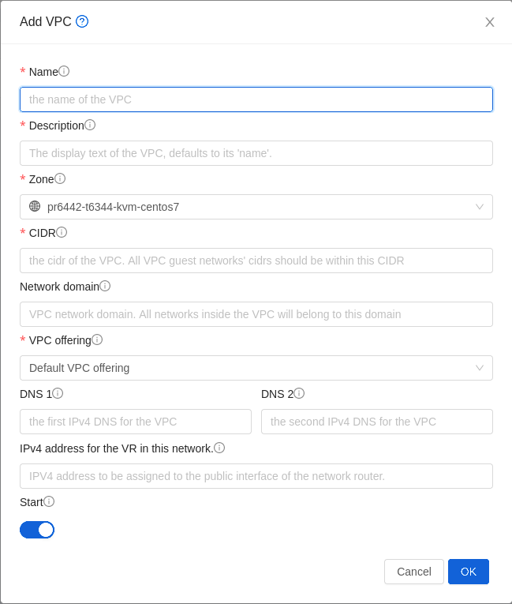
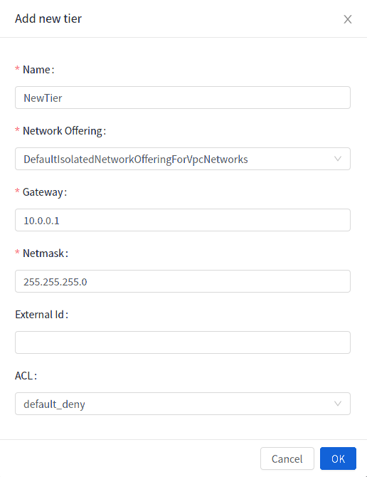
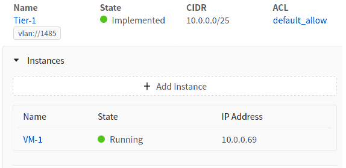
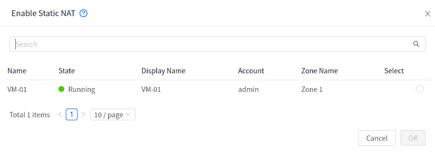

VPC#
Adding a Virtual Private Cloud#
When creating the VPC, you simply provide the zone and a set of IP addresses for the VPC Network address space. You specify this set of addresses in the form of a Classless Inter-Domain Routing (CIDR) block.
Log in to the UI as an administrator or end User.
In the left navigation, choose Network.
In the Select view, select VPC.
Click Add VPC. The Add VPC page is displayed as follows:

Provide the following information:
Name: A short name for the VPC that you are creating.
Description: A brief description of the VPC.
Zone: Choose the zone where you want the VPC to be available.
CIDR: Defines the CIDR range for all the Network Tiers (guest Networks) within a VPC. When you create a Network Tier, ensure that its CIDR is within the Super CIDR value you enter. The CIDR must be RFC1918 compliant.
Network Domain: If you want to assign a special domain name, specify the DNS suffix. This parameter is applied to all the Network Tiers within the VPC. That implies, all the Network Tiers you create in the VPC belong to the same DNS domain. If the parameter is not specified, a DNS domain name is generated automatically.
VPC Offering: If the administrator has configured multiple VPC offerings, select the one you want to use for this VPC.
DNS: A set of custom DNS that will be used by this VPC. If not provided then DNS specified for the zone will be used. Available only when the selected VPC offering supports DNS service.
IPv6 DNS: A set of custom IPv6 DNS that will be used by this VPC. If not provided then IPv6 DNS specified for the zone will be used. Available only when the selected VPC offering is IPv6 enabled and supports DNS service.
IPv4 address for the VR in this VPC: The source NAT address or primary public Network address to use by the guest Networks. If not provided then a random address from the available pool of addresses will be used.
- Public MTU: The MTU to be configured on the public interfaces of the
VPC Network’s VR
Click OK.
Note
In security groups-enabled Advanced zones and Basic zones, creation of VPC and isolated Networks are not supported.
Adding Network Tiers#
Network Tiers are distinct locations within a VPC that act as isolated Networks. Network Tiers are set up on different VLANs that can communicate with each other by using a virtual router. Network Tiers provide inexpensive, low latency Network connectivity to other Network Tiers within the VPC.
Log in to the UI as an administrator or end User.
In the left navigation, choose Network.
In the Select view, select VPC.
All the VPC that you have created for the Account is listed in the page.
Click the Configure button of the VPC for which you want to set up Network Tiers.
Click Create Network.
The Add new Network Tier dialog is displayed, as follows:

Specify the following:
All the fields are mandatory.
Name: A unique name for the Network Tier you create.
Network Offering: The following default Network offerings are listed: Internal LB, DefaultIsolatedNetworkOfferingForVpcNetworksNoLB, DefaultIsolatedNetworkOfferingForVpcNetworks
In a VPC, only one Network Tier can be created by using LB-enabled Network offering.
Gateway: The gateway for the Network Tier you create. Ensure that the gateway is within the Super CIDR range that you specified while creating the VPC, and is not overlapped with the CIDR of any existing Network Tier within the VPC.
Netmask: The netmask for the Network Tier you create.
For example, if the VPC CIDR is 10.0.0.0/16 and the Network Tier CIDR is 10.0.1.0/24, the gateway of the Network Tier is 10.0.1.1, and the netmask of the Network Tier is 255.255.255.0.
Click OK.
Continue with configuring access control list for the Network Tier.
Configuring Network Access Control List#
Define a Network Access Control List (ACL) to control incoming (ingress) and outgoing (egress) traffic between the associated Network Tier and external Networks (other Network Tiers of the VPC as well as public Networks).
About Network ACL Lists#
In Zergaw CloudStack terminology, a Network ACL is a group of Network ACL rules. Network ACL rules are processed by their order, starting with the lowest numbered rule. Each rule defines at least an affected protocol, traffic type, action and affected destination / source Network. The following table shows a exemplary content of a “default_deny” ACL.
Rule |
Protocol |
Traffic type |
Action |
CIDR |
|---|---|---|---|---|
1 |
All |
Ingress |
Deny |
0.0.0.0/0 |
2 |
All |
Egress |
Deny |
0.0.0.0/0 |
Each Network ACL is associated with a VPC and can be assigned to multiple VPC Network Tiers. Every Network Tier needs to be associated with a Network ACL. Only one ACL can be associated with a Network Tier at a time. If no custom Network ACL is available at the time of Network Tier creation, a default Network ACL has to be used instead. Currently two default ACL are available. The “default_allow” ACL allows in- and egress traffic while the “default_deny” blocks all in- and egress traffic. Default Network ACL cannot be removed or modified. Newly created ACLs, while showing empty, deny all incoming traffic to the associated tier and allow all outgoing traffic. To change the defaults add a “deny all egress destination” and / or “allow all ingress source” rule to the ACL. Afterwards traffic can be white- or blacklisted.
Note
ACL Rules in Zergaw Cloudstack are stateful
Source / Destination CIDRs are always external Networks
ACL rules can also been seen on the virtual router of the VPC. Ingress rules are listed in the table iptables table “filter” while egress rules are placed in the “mangle” table
ACL rules for ingress and egress are not correlating. For example a egress “deny all” won’t affect traffic in response to an allowed ingress connection
Creating ACL Lists#
Log in to the UI as an administrator or end User.
In the left navigation, choose Network.
In the Select view, select VPC.
All the VPCs that you have created for the Account is listed in the page.
Click on the desired VPC to go to the VPC detail page
Select Network ACL Lists.
The following default rules are displayed in the Network ACLs page: default_allow, default_deny.
Click Add ACL Lists, and specify the following:
ACL List Name: A name for the ACL list.
Description: A short description of the ACL list that can be displayed to users.
Creating an ACL Rule#
Log in to the UI as an administrator or end user.
In the left navigation, choose Network.
In the Select view, select VPC.
All the VPCs that you have created for the Account is listed in the page.
Click on the desired VPC to go to the VPC detail page
Select Network ACL Lists.
In addition to the custom ACL lists you have created, the following default rules are displayed in the Network ACLs page: default_allow, default_deny.
Select the desired ACL list.
Select the ACL List Rules tab.
To add an ACL rule, fill in the following fields to specify what kind of network traffic is allowed in the VPC.
Rule Number: The order in which the rules are evaluated.
CIDR: The CIDR acts as the Source CIDR for the Ingress rules, and Destination CIDR for the Egress rules. To accept traffic only from or to the IP addresses within a particular address block, enter a CIDR or a comma-separated list of CIDRs. The CIDR is the base IP address of the incoming traffic. For example, 192.168.0.0/22. To allow all CIDRs, set to 0.0.0.0/0.
Action: What action to be taken. Allow traffic or block.
Protocol: The networking protocol that sources use to send traffic to the tier. The TCP and UDP protocols are typically used for data exchange and end-user communications. The ICMP protocol is typically used to send error messages or network monitoring data. All supports all the traffic. Other option is Protocol Number.
Start Port, End Port (TCP, UDP only): A range of listening ports that are the destination for the incoming traffic. If you are opening a single port, use the same number in both fields.
Protocol Number: The protocol number associated with IPv4 or IPv6. For more information, see Protocol Numbers.
ICMP Type, ICMP Code (ICMP only): The type of message and error code that will be sent.
Traffic Type: The type of traffic: Incoming or outgoing.
Click Add. The ACL rule is added.
You can edit the tags assigned to the ACL rules and delete the ACL rules you have created. Click the appropriate button in the Details tab.
Creating a Tier with Custom ACL List#
Create a VPC.
Create a custom ACL list.
Add ACL rules to the ACL list.
Create a tier in the VPC.
Select the desired ACL list while creating a tier.
Click OK.
Assigning a Custom ACL List to a Tier#
Create a VPC.
Create a tier in the VPC.
Associate the tier with the default ACL rule.
Create a custom ACL list.
Add ACL rules to the ACL list.
Select the tier for which you want to assign the custom ACL.
Click the Replace ACL List icon.
The Replace ACL List dialog is displayed.
Select the desired ACL list.
Click OK.
Deploying Instances to the Tier#
Log in to the UI as an administrator or end User.
In the left navigation, choose Network.
In the Select view, select VPC.
All the VPCs that you have created for the Account is listed in the page.
Click on the desired VPC to which you want to deploy the Instances.
The VPC detail page is displayed, Click on Networks, where all the tiers you have created are listed.
Click Instances tab of the tier to which you want to add an Instance.

The Add Instance page is displayed.
Follow the on-screen instruction to add an Instance. For information on adding an Instance, see the Installation Guide.
Acquiring a New IP Address for a VPC#
When you acquire an IP address, all IP addresses are allocated to VPC, not to the guest networks within the VPC. The IPs are associated to the guest network only when the first port-forwarding, load balancing, or Static NAT rule is created for the IP or the network. IP can’t be associated to more than one network at a time.
Log in to the UI as an administrator or end User.
In the left navigation, choose Network.
In the Select view, select VPC.
All the VPCs that you have created for the Account is listed in the page.
Click on the desired VPC to go to the VPC detail page
Select Public IP Addresses.
The Public IP Addresses page is displayed.
Click Acquire New IP, and click Yes in the confirmation dialog.
You are prompted for confirmation because, typically, IP addresses are a limited resource. Within a few moments, the new IP address should appear with the state Allocated. You can now use the IP address in port forwarding, load balancing, and static NAT rules.
Releasing an IP Address Allotted to a VPC#
The IP address is a limited resource. If you no longer need a particular IP, you can disassociate it from its VPC and return it to the pool of available addresses. An IP address can be released from its tier, only when all the networking ( port forwarding, load balancing, or StaticNAT ) rules are removed for this IP address. The released IP address will still belongs to the same VPC.
Log in to the UI as an administrator or end User.
In the left navigation, choose Network.
In the Select view, select VPC.
All the VPCs that you have created for the Account is listed in the page.
Click on the desired VPC to go to the VPC detail page
Select Public IP Addresses.
The Public IP Addresses page is displayed.
Click the IP you want to release.
In the Details tab, click the Release IP button

Enabling or Disabling Static NAT on a VPC#
A static NAT rule maps a public IP address to the private IP address of an Instance in a VPC to allow Internet traffic to it. This section tells how to enable or disable static NAT for a particular IP address in a VPC.
If port forwarding rules are already in effect for an IP address, you cannot enable static NAT to that IP.
If a Guest Instance is part of more than one network, static NAT rules will function only if they are defined on the default network.
Log in to the UI as an administrator or end User.
In the left navigation, choose Network.
In the Select view, select VPC.
All the VPCs that you have created for the Account is listed in the page.
Click on the desired VPC to go to the VPC detail page
Select Public IP Addresses.
The Public IP Addresses page is displayed.
Click the IP you want to work with.
In the Details tab,click the Static NAT button. The button toggles between Enable and Disable, depending on whether static NAT is currently enabled for the IP address.
If you are enabling static NAT, a dialog appears as follows:

Select the tier and the destination Instance, then click Apply.
Adding Load Balancing Rules on a VPC#
In a VPC, you can configure two types of load balancing: external LB and internal LB. External LB is nothing but a LB rule created to redirect the traffic received at a public IP of the VPC virtual router. The traffic is load balanced within a tier based on your configuration. When you use internal LB service, traffic received at a tier is load balanced across different Instances within that tier. For example, traffic reached at Web tier is redirected to another Instance in that tier. The service is provided by a internal LB Instance configured on the target tier.
Load Balancing Within a Tier (External LB)#
A Zergaw CloudStack user or administrator may create load balancing rules that balance traffic received at a public IP to one or more Instances that belong to a Network Tier that provides load balancing service in a VPC. A user creates a rule, specifies an algorithm, and assigns the rule to a set of Instances within a tier.
Creating an External LB Rule#
Log in to the UI as an administrator or end user.
In the left navigation, choose Network.
In the Select view, select VPC.
All the VPCs that you have created for the Account is listed in the page.
Click on the desired VPC to go to the VPC detail page
Select Public IP Addresses.
The Public IP Addresses page is displayed.
Click the IP address for which you want to create the rule, then click the Configuration tab.
In the Load Balancing tab,
Specify the following:
Name: A name for the load balancer rule.
Public Port: The port that receives the incoming traffic to be balanced.
Private Port: The port that the Instances will use to receive the traffic.
Algorithm. Choose the load balancing algorithm you want CloudStack to use. CloudStack supports the following well-known algorithms:
Round-robin
Least connections
Source
Stickiness. (Optional) Click Configure and choose the algorithm for the stickiness policy. See Sticky Session Policies for Load Balancer Rules.
Add Instances: Click Add Instances, then select two or more Instances that will divide the load of incoming traffic, and click Apply.
The new load balancing rule appears in the list. You can repeat these steps to add more load balancing rules for this IP address.
Adding a Port Forwarding Rule on a VPC#
Log in to the UI as an administrator or end user.
In the left navigation, choose Network.
In the Select view, select VPC.
All the VPCs that you have created for the Account is listed in the page.
Click on the desired VPC to go to the VPC detail page
Select Public IP Addresses.
The Public IP Addresses page is displayed.
Click the IP address for which you want to create the rule, then click the Configuration tab.
In the Port Forwarding tab,
Specify the following:
Public Port: The port to which public traffic will be addressed on the IP address you acquired in the previous step.
Private Port: The port on which the Instance is listening for forwarded public traffic.
Protocol: The communication protocol in use between the two ports.
TCP
UDP
Add Instance: Click Add Instance. Select the name of the Instance to which this rule applies, and click Apply.
You can test the rule by opening an SSH session to the Instance.
Removing Tiers#
You can remove a tier from a VPC. A removed tier cannot be revoked. When a tier is removed, only the resources of the tier are expunged. All the network rules (port forwarding, load balancing and staticNAT) and the IP addresses associated to the tier are removed. The IP address still be belonging to the same VPC.
Log in to the UI as an administrator or end user.
In the left navigation, choose Network.
In the Select view, select VPC.
All the VPC that you have created for the Account is listed in the page.
Click on the desired VPC to go to the VPC detail page
Select the tier you want to remove in the Networks tab.
In the Network Details tab, click the Delete Network button.

Click Yes to confirm. Wait for some time for the tier to be removed.
Editing, Restarting, and Removing a Virtual Private Cloud#
Note
Ensure that all the tiers are removed before you remove a VPC.
Log in to the UI as an administrator or end user.
In the left navigation, choose Network.
In the Select view, select VPC.
All the VPCs that you have created for the Account is listed in the page.
Select the VPC you want to work with.
In the Details tab, click the Remove VPC button

You can remove the VPC by also using the remove button in the Quick View.
You can edit the name and description of a VPC. To do that, select the VPC, then click the Edit button.
To restart a VPC, select the VPC, then click the Restart button.